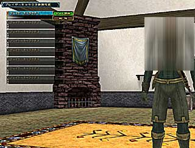
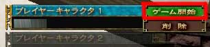
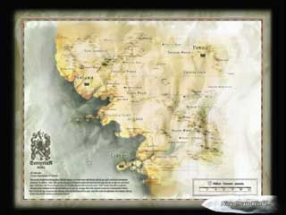

(プレイキャラクター選択画面)
1.新規プレイヤー作成
「プレイヤーキャラクター選択画面」が出るので、好きな番号(基本的にはプレイヤーキャラクター1)を選んでください。マウス操作の場合はカーソルを移動させてクリック、キーボード操作の場合はカーソルキーでフォーカスを移しエンターキーを押してください。
2.キャラクターの詳細を決める
基本的に上から決めていきます。まずはプレイヤー名を選び、プレイヤーの名前を入力してください。名前の字数制限は半角英数で64文字らしいです。
次に性別を決めます。「性別」を選び男性か女性かを選んでください。そして「フェイスパターン」、「ヘアスタイル」を決めます。
最後に、「決定」を選べば終了です。
名前が重複した場合は、残念ですが他の名前へ変更してください。問題は、そのようなことが生じるほどプレイヤーがいるのかというところですが。
3.クラスを選ぶ
「クラス1」を選ぶと右にクラスの一覧が表示されるので、好きなクラスを選択してください。
同様に「クラス2」を決めたら、「決定」を押してください。
当然のことながら、同じクラスを2つ選ぶことはできません。またクラスはゲーム途中で自由に変えられるので、今は適当に選んでも問題はありません。
4.所属国を選ぶ
「ヤマト」か「リドニア」のどちらかを選択してください。所属国は一度決めると変更できないので、慎重に選んでください。ただし、所属国に応じて利点、欠点があるわけではありません。
5.最終確認
あなたが決めたキャラクターの詳細が表示されます。問題がなければ「決定」を選択してください。「プレイキャラクター選択画面」へ戻ります。
ここで「決定」を押すと、キャラクターを変更できなくなるので注意してください。
6.ゲーム開始
「プレイキャラクター選択画面」で先ほど作成したキャラクターを選択してください。「ゲーム開始」と「削除」というメニューが表示されますので、「ゲーム開始」を選びます。
しばらくすると、チュートリアルが始まります。指示に従って行動すれば、操作になれることはありませんが、なんとなく操作方法はわかります。

(ゲーム開始)

(ロード中の画面) |
|